Layout evidence only; held-IP imagery is not new-book source art.
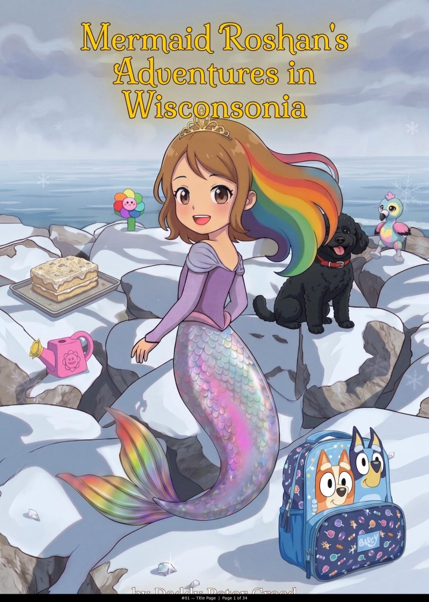
01. Cover: full winter portrait scene, title integrated above; no aqua ornamental surround.
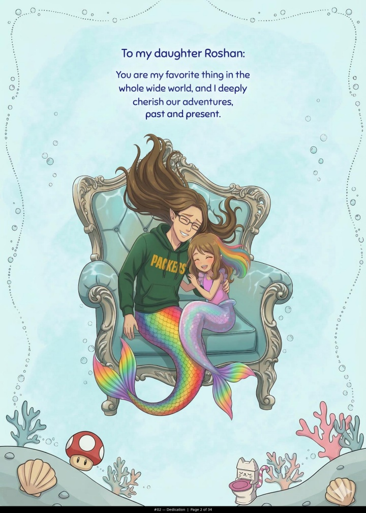
02. Dedication: one large seated hug under centered copy; dotted blue wash and low banks with personal objects.
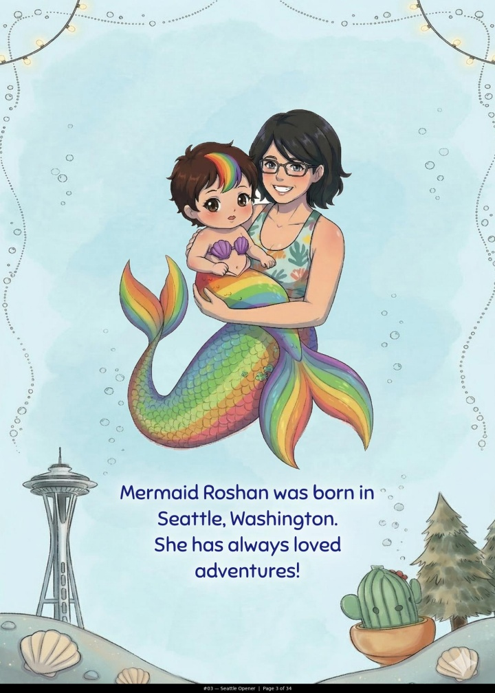
03. Origin: central mother/child silhouette and low copy; Space Needle, evergreen and cactus modify the lower border; top corner lights.
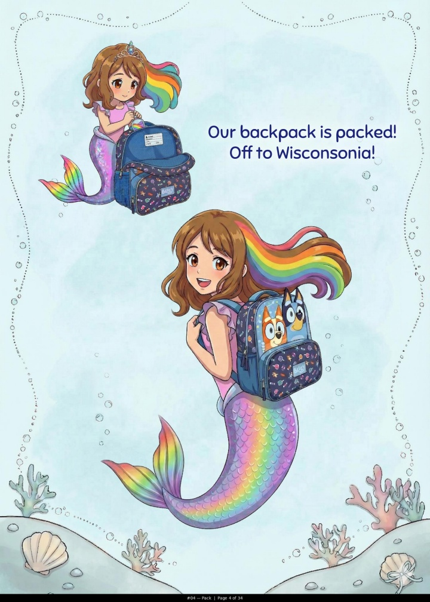
04. Packing: small upper-left action, large lower-right figure; copy fits the diagonal gap. Object contours, not screenshot boxes.
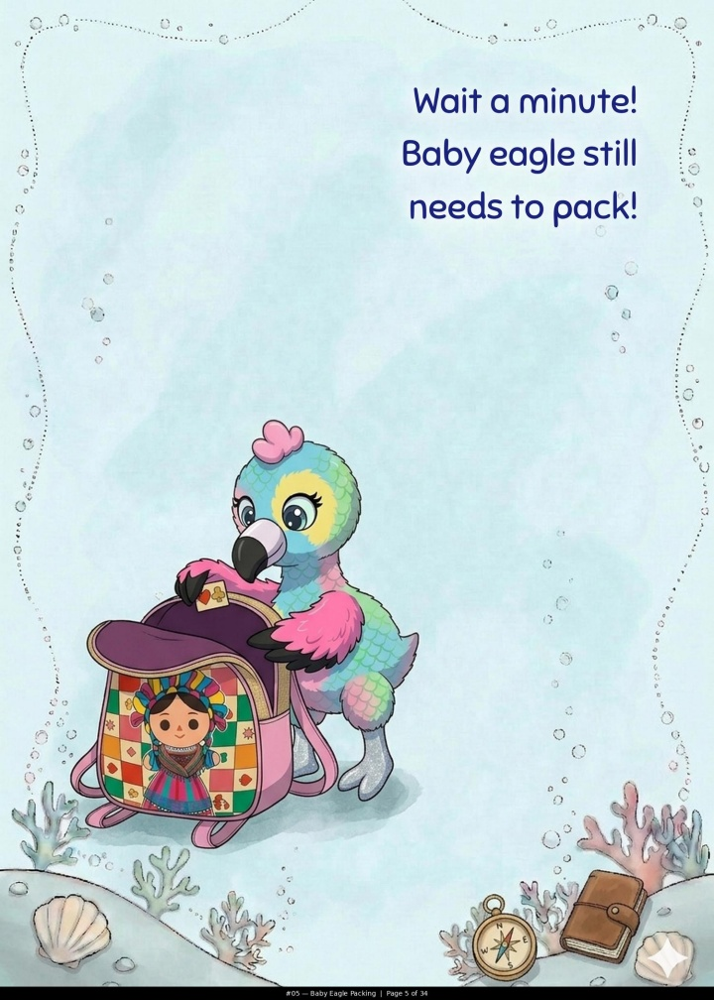
05. Eagle packing: bird/backpack island lower-left, copy upper-right; compass and journal in lower bank. A deliberately open setup page.
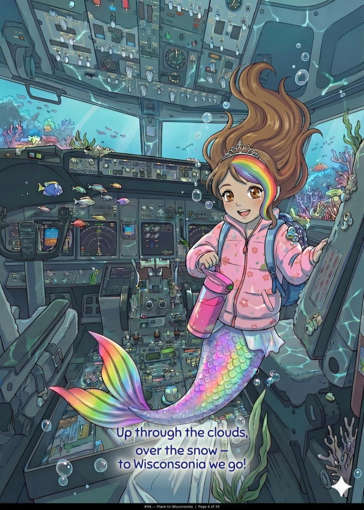
06. Flight: complete cabin scene, low short caption with soft local light; no opaque full-width strip.
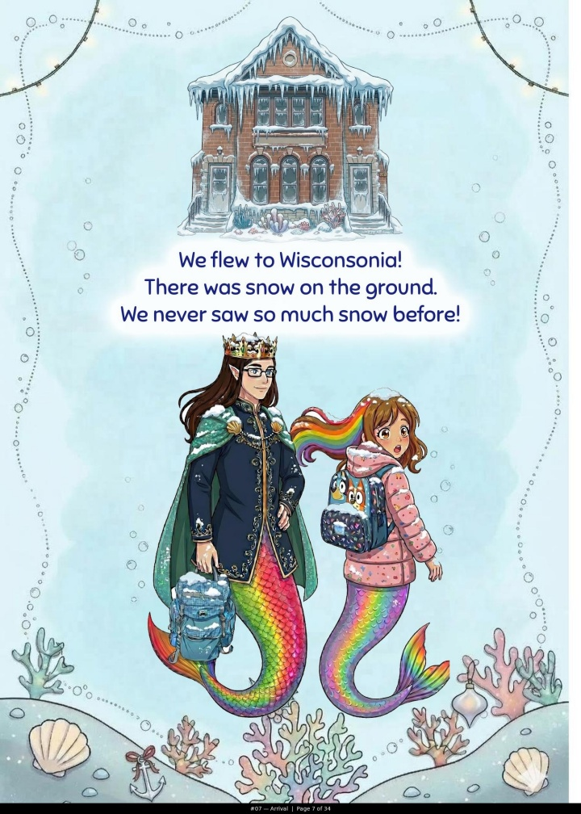
07. Arrival: isolated snowy building above, copy middle, large father/child pair below; travel/holiday footing.
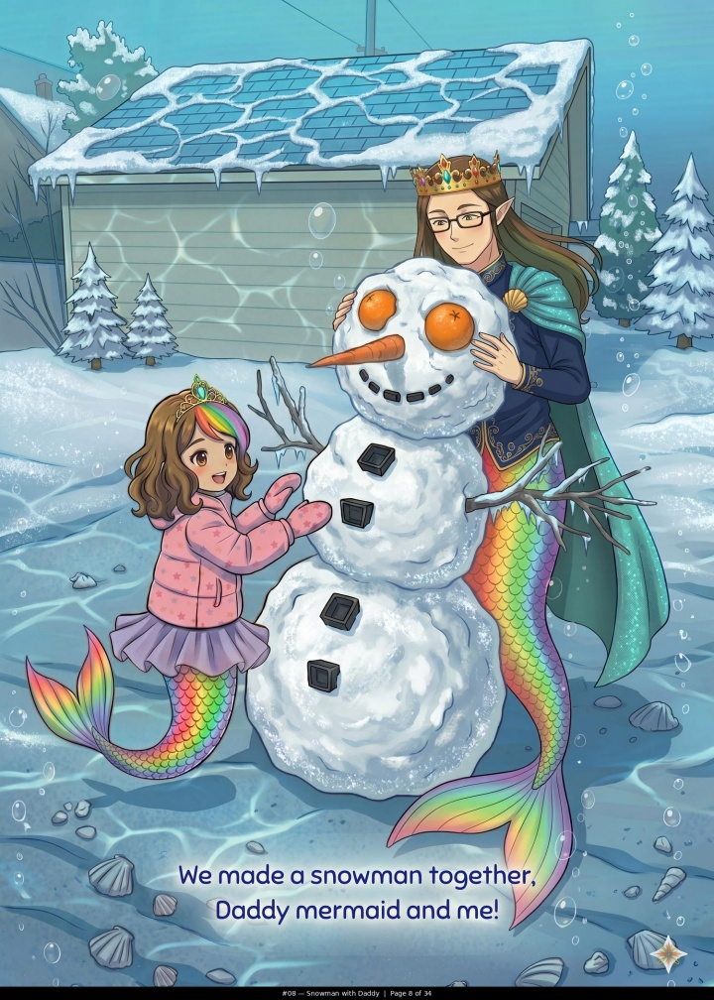
08. Snowman: complete environment and shared action; caption low within scene; no decorative frame.
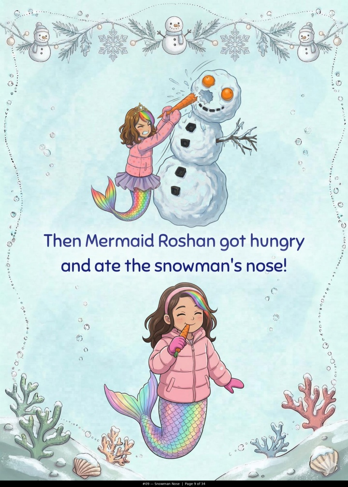
09. Carrot joke: action above and reaction below; snowman/evergreen garland at top, snow on lower banks. Background changes beyond a simple color swap.
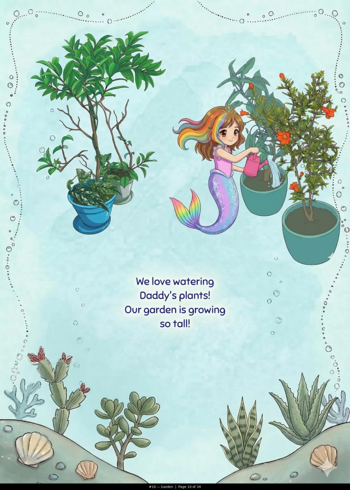
10. Gardening: connected plant-and-person islands upper half; succulents replace much of the lower coral. Quiet blue center; no holiday corner lights.
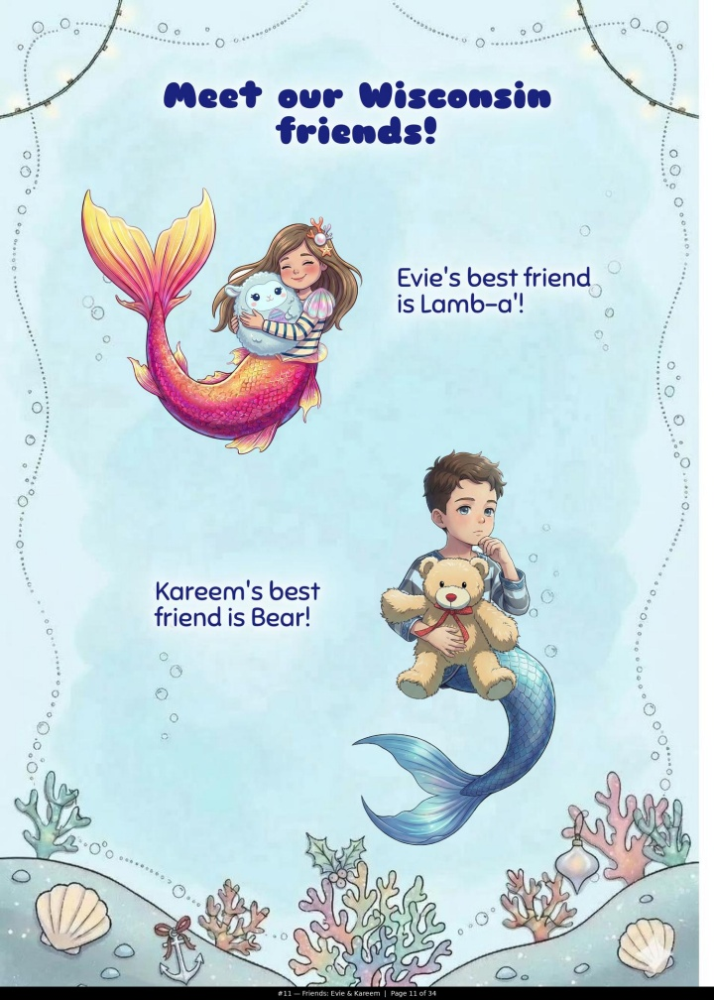
11. Friends: alternating character/text pairs, different scales, heavier headline; low holiday footing.
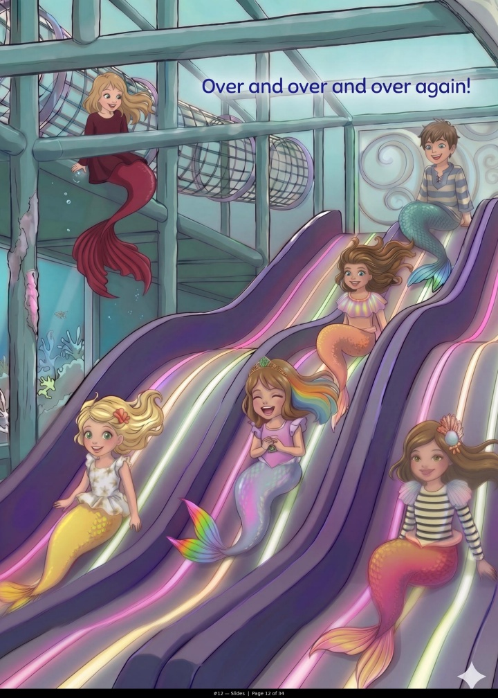
12. Slides: complete diagonal action scene; text high in quiet structure, not on a separate bar.
13. Friends: upper-left pair and lower-right figure with doll; captions opposite; small dolls integrated in lower banks.
14. Trampoline: tall full environment and group action; caption low; no ornamental background.
15. Spinning: tall play-object island above, irregular ball-pit island below; central caption separates them.
16. Cooking: two upper process cutouts and one lower; copy in middle gap; spices, whisk and egg modify lower banks.
17. Cake: full kitchen result/hug scene; small soft glow behind low caption, not a rectangular panel.
18. Museum: isolated building above and display/child below; beetle/butterfly motifs in footing. Display remains rectangular because the object is rectangular.
19. Butterfly LEFT: continuous full-art environment with page 20; child anchors left; no decorative surround.
20. Butterfly RIGHT: habitat, rocks and fruit continue across seam; not an independent enlarged portrait crop.
21. Crafts: small making vignette above, narration middle, large irregular finished paper crafts below; glue/scissors/thread in the banks. Key cutout reference.
22. Treats: small making action above, large shared treat below; food/utensil footing. Distinct stages, not duplicate viewpoints.
23. Concert LEFT: continuous panorama with page 24, captions in upper quiet space. Layout evidence only; held-IP characters excluded from new book.
24. Concert RIGHT: same scene and scale across seam. Layout evidence only; no reuse of held-IP characters.
25. Gift: one large figure/object island, two short caption areas; streamer is foreground story content. Held-IP imagery excluded.
26. Dog: enormous connected hug/jump silhouette under brief top copy; dog accessories embedded in banks. Strong foreground scale reference.
27. Tree: complete scene and rear-view action; caption low in natural space; no ornamental page background.
28. Sleep: large bed/child island, copy high; sleeping toy cutouts become thematic low decoration.
29. Gifts: asymmetrical gift/tree objects and large lower play vignette; copy fits upper-right opening. Held-IP content excluded.
30. Bath: full close-up; short caption on natural tile space; no footer or extra blue background.
31. Goodbye: large complete embrace under brief top copy; holiday footing; whole bodies preserved.
32. Flight home: full cabin portrait with one low caption in existing quiet area.
33. Closing: complete winter illustration with generous sky for top text. Quiet space exists within the scene, not as blank filler.
34. Back cover: huge hug and a few memory-object cutouts, low copy; dotted perimeter without standard high lower banks. A different cover composition.